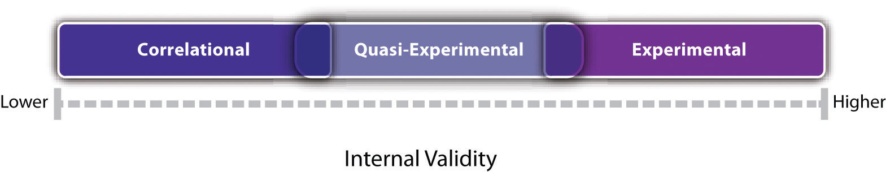

Nonexperimental researchResearch that lacks the manipulation of an independent variable or the random assignment of participants to conditions or orders of conditions. is research that lacks the manipulation of an independent variable, random assignment of participants to conditions or orders of conditions, or both.
In a sense, it is unfair to define this large and diverse set of approaches collectively by what they are not. But doing so reflects the fact that most researchers in psychology consider the distinction between experimental and nonexperimental research to be an extremely important one. This is because while experimental research can provide strong evidence that changes in an independent variable cause differences in a dependent variable, nonexperimental research generally cannot. As we will see, however, this does not mean that nonexperimental research is less important than experimental research or inferior to it in any general sense.
As we saw in Chapter 6 "Experimental Research", experimental research is appropriate when the researcher has a specific research question or hypothesis about a causal relationship between two variables—and it is possible, feasible, and ethical to manipulate the independent variable and randomly assign participants to conditions or to orders of conditions. It stands to reason, therefore, that nonexperimental research is appropriate—even necessary—when these conditions are not met. There are many ways in which this can be the case.
Again, the choice between the experimental and nonexperimental approaches is generally dictated by the nature of the research question. If it is about a causal relationship and involves an independent variable that can be manipulated, the experimental approach is typically preferred. Otherwise, the nonexperimental approach is preferred. But the two approaches can also be used to address the same research question in complementary ways. For example, nonexperimental studies establishing that there is a relationship between watching violent television and aggressive behavior have been complemented by experimental studies confirming that the relationship is a causal one (Bushman & Huesmann, 2001).Bushman, B. J., & Huesmann, L. R. (2001). Effects of televised violence on aggression. In D. Singer & J. Singer (Eds.), Handbook of children and the media (pp. 223–254). Thousand Oaks, CA: Sage. Similarly, after his original study, Milgram conducted experiments to explore the factors that affect obedience. He manipulated several independent variables, such as the distance between the experimenter and the participant, the participant and the confederate, and the location of the study (Milgram, 1974).Milgram, S. (1974). Obedience to authority: An experimental view. New York, NY: Harper & Row.
Nonexperimental research falls into three broad categories: single-variable research, correlational and quasi-experimental research, and qualitative research. First, research can be nonexperimental because it focuses on a single variable rather than a statistical relationship between two variables. Although there is no widely shared term for this kind of research, we will call it single-variable researchResearch that focuses on a single variable rather than on a statistical relationship between variables.. Milgram’s original obedience study was nonexperimental in this way. He was primarily interested in one variable—the extent to which participants obeyed the researcher when he told them to shock the confederate—and he observed all participants performing the same task under the same conditions. The study by Loftus and Pickrell described at the beginning of this chapter is also a good example of single-variable research. The variable was whether participants “remembered” having experienced mildly traumatic childhood events (e.g., getting lost in a shopping mall) that they had not actually experienced but that the research asked them about repeatedly. In this particular study, nearly a third of the participants “remembered” at least one event. (As with Milgram’s original study, this study inspired several later experiments on the factors that affect false memories.)
As these examples make clear, single-variable research can answer interesting and important questions. What it cannot do, however, is answer questions about statistical relationships between variables. This is a point that beginning researchers sometimes miss. Imagine, for example, a group of research methods students interested in the relationship between children’s being the victim of bullying and the children’s self-esteem. The first thing that is likely to occur to these researchers is to obtain a sample of middle-school students who have been bullied and then to measure their self-esteem. But this would be a single-variable study with self-esteem as the only variable. Although it would tell the researchers something about the self-esteem of children who have been bullied, it would not tell them what they really want to know, which is how the self-esteem of children who have been bullied compares with the self-esteem of children who have not. Is it lower? Is it the same? Could it even be higher? To answer this question, their sample would also have to include middle-school students who have not been bullied.
Research can also be nonexperimental because it focuses on a statistical relationship between two variables but does not include the manipulation of an independent variable, random assignment of participants to conditions or orders of conditions, or both. This kind of research takes two basic forms: correlational research and quasi-experimental research. In correlational researchResearch in which two or more variables are measured and the statistical relationships among them are assessed. There is no manipulated independent variable and usually very little attempt to control extraneous variables., the researcher measures the two variables of interest with little or no attempt to control extraneous variables and then assesses the relationship between them. A research methods student who finds out whether each of several middle-school students has been bullied and then measures each student’s self-esteem is conducting correlational research. In quasi-experimental researchResearch that involves the manipulation of an independent variable but lacks the random assignment of participants to conditions or orders of conditions. It is generally used in field settings to test the effectiveness of a treatment., the researcher manipulates an independent variable but does not randomly assign participants to conditions or orders of conditions. For example, a researcher might start an antibullying program (a kind of treatment) at one school and compare the incidence of bullying at that school with the incidence at a similar school that has no antibullying program.
The final way in which research can be nonexperimental is that it can be qualitative. The types of research we have discussed so far are all quantitative, referring to the fact that the data consist of numbers that are analyzed using statistical techniques. In qualitative researchResearch that typically involves formulating broad research questions, collecting large amounts of data from a small number of participants, and summarizing the data using nonstatistical techniques., the data are usually nonnumerical and are analyzed using nonstatistical techniques. Rosenhan’s study of the experience of people in a psychiatric ward was primarily qualitative. The data were the notes taken by the “pseudopatients”—the people pretending to have heard voices—along with their hospital records. Rosenhan’s analysis consists mainly of a written description of the experiences of the pseudopatients, supported by several concrete examples. To illustrate the hospital staff’s tendency to “depersonalize” their patients, he noted, “Upon being admitted, I and other pseudopatients took the initial physical examinations in a semipublic room, where staff members went about their own business as if we were not there” (Rosenhan, 1973, p. 256).Rosenhan, D. L. (1973). On being sane in insane places. Science, 179, 250–258.
Recall that internal validity is the extent to which the design of a study supports the conclusion that changes in the independent variable caused any observed differences in the dependent variable. Figure 7.1 shows how experimental, quasi-experimental, and correlational research vary in terms of internal validity. Experimental research tends to be highest because it addresses the directionality and third-variable problems through manipulation and the control of extraneous variables through random assignment. If the average score on the dependent variable in an experiment differs across conditions, it is quite likely that the independent variable is responsible for that difference. Correlational research is lowest because it fails to address either problem. If the average score on the dependent variable differs across levels of the independent variable, it could be that the independent variable is responsible, but there are other interpretations. In some situations, the direction of causality could be reversed. In others, there could be a third variable that is causing differences in both the independent and dependent variables. Quasi-experimental research is in the middle because the manipulation of the independent variable addresses some problems, but the lack of random assignment and experimental control fails to address others. Imagine, for example, that a researcher finds two similar schools, starts an antibullying program in one, and then finds fewer bullying incidents in that “treatment school” than in the “control school.” There is no directionality problem because clearly the number of bullying incidents did not determine which school got the program. However, the lack of random assignment of children to schools could still mean that students in the treatment school differed from students in the control school in some other way that could explain the difference in bullying.
Figure 7.1
Experiments are generally high in internal validity, quasi-experiments lower, and correlational studies lower still.
Notice also in Figure 7.1 that there is some overlap in the internal validity of experiments, quasi-experiments, and correlational studies. For example, a poorly designed experiment that includes many confounding variables can be lower in internal validity than a well designed quasi-experiment with no obvious confounding variables.
Discussion: For each of the following studies, decide which type of research design it is and explain why.